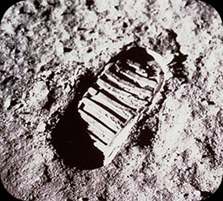

On the morning of July 16, 1969, Apollo 11 astronauts Neil Armstrong, Buzz Aldrin, and Michael Collins are perched atop another Saturn V rocket at Launch Complex 39A in the Kennedy Space Center. This three-stage, 363-foot rocket, boasting 7.5 million pounds of thrust, will propel them into space and into the annals of history. At precisely 9:32 a.m. EDT, the engines ignite, and Apollo 11 gracefully clears the tower. A mere 12 minutes later, the crew finds itself in Earth orbit. Following one and a half orbits, mission controllers give the "go" for "Translunar Injection" - the signal to embark on the journey to the moon. Three days later, the crew enters lunar orbit, with Armstrong and Aldrin aboard the lunar module Eagle, while Collins remains in the command module Columbia. Collins describes Eagle as "the weirdest looking contraption I have ever seen in the sky," but its significance will be proven beyond measure. As the time approaches to land Eagle in the Sea of Tranquility, Armstrong relies on his ingenuity to manually navigate past a boulder-strewn area. During the final descent seconds, alarms sound from Eagle's computer - a case of it trying to do too much at once. Aldrin later remarks, "unfortunately it came up when we did not want to be trying to solve these particular problems."
At 4:17 p.m. EDT, the lunar module touches down with just 30 seconds of fuel remaining. Armstrong's words, "Houston, Tranquility Base here. The Eagle has landed," spark euphoria at mission control. Armstrong admits that landing was his primary concern, saying, "the unknowns were rampant," and "there were just a thousand things to worry about." At 10:56 p.m. EDT, Armstrong takes humanity's first step on another celestial body. With over half a billion people watching on television, he descends the ladder and proclaims, "That's one small step for a man, one giant leap for mankind." Aldrin follows suit, describing the lunar surface as "magnificent desolation." They explore for two and a half hours, gathering samples and capturing photographs. They leave behind an American flag, a tribute to the fallen Apollo 1 crew, and a plaque on Eagle's leg, reading, "Here men from the planet Earth first set foot upon the moon. July 1969 A.D. We came in peace for all mankind." After reuniting with Collins in Columbia, the crew splashes down off Hawaii on July 24, 1969. Kennedy's challenge has been met. Men from Earth have walked on the moon and returned safely home.Astronaut Buzz Aldrin, lunar module pilot of Apollo 11, the first lunar landing mission, poses for a photograph beside the deployed United States flag during a walk on the lunar surface. The lunar module is on the left, and the footprints of the astronauts are clearly visible in the soil of the moon. Astronaut Neil A. Armstrong, mission commander, took this picture with a 70mm Hasselblad lunar surface camera.
@2023 SpaceQuest
Terms and conditions
Privacy